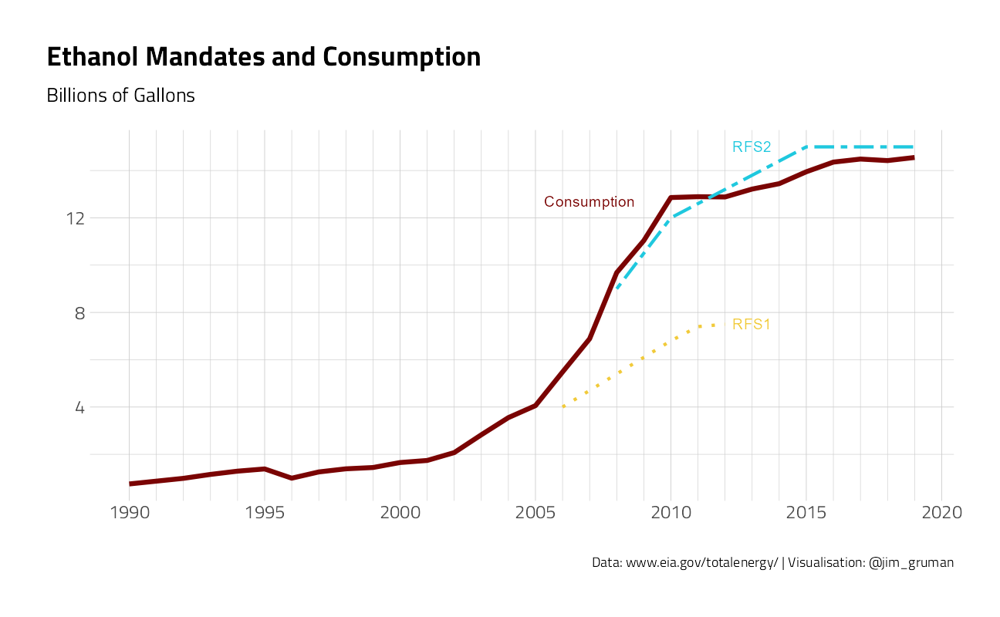
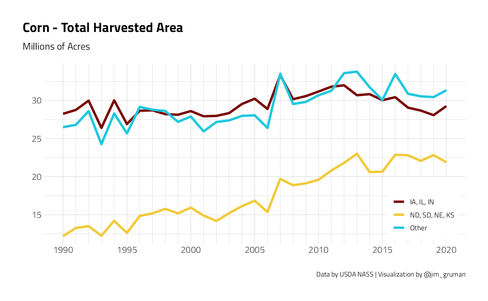
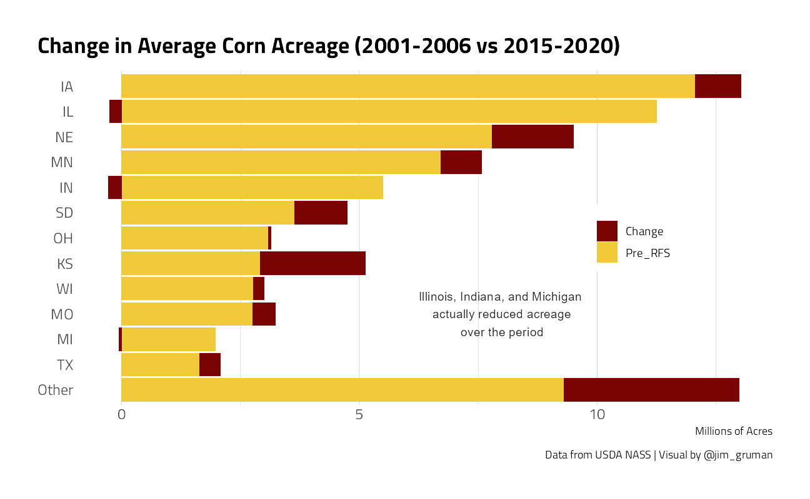

Corn Production
Jim Gruman
October 9, 2020
Last updated: 2021-09-21
Checks: 7 0
Knit directory: myTidyTuesday/
This reproducible R Markdown analysis was created with workflowr (version 1.6.2). The Checks tab describes the reproducibility checks that were applied when the results were created. The Past versions tab lists the development history.
Great! Since the R Markdown file has been committed to the Git repository, you know the exact version of the code that produced these results.
Great job! The global environment was empty. Objects defined in the global environment can affect the analysis in your R Markdown file in unknown ways. For reproduciblity it’s best to always run the code in an empty environment.
The command set.seed(20210907) was run prior to running the code in the R Markdown file. Setting a seed ensures that any results that rely on randomness, e.g. subsampling or permutations, are reproducible.
Great job! Recording the operating system, R version, and package versions is critical for reproducibility.
Nice! There were no cached chunks for this analysis, so you can be confident that you successfully produced the results during this run.
Great job! Using relative paths to the files within your workflowr project makes it easier to run your code on other machines.
Great! You are using Git for version control. Tracking code development and connecting the code version to the results is critical for reproducibility.
The results in this page were generated with repository version 25e7725. See the Past versions tab to see a history of the changes made to the R Markdown and HTML files.
Note that you need to be careful to ensure that all relevant files for the analysis have been committed to Git prior to generating the results (you can use wflow_publish or wflow_git_commit). workflowr only checks the R Markdown file, but you know if there are other scripts or data files that it depends on. Below is the status of the Git repository when the results were generated:
Ignored files:
Ignored: .Rhistory
Ignored: .Rproj.user/
Ignored: catboost_info/
Ignored: data/2021-09-08/
Ignored: data/acs_poverty.rds
Ignored: data/fmhpi.rds
Ignored: data/grainstocks.rds
Ignored: data/hike_data.rds
Ignored: data/us_states.rds
Ignored: data/us_states_hexgrid.geojson
Ignored: data/weatherstats_toronto_daily.csv
Untracked files:
Untracked: code/work list batch targets.R
Untracked: figure/
Note that any generated files, e.g. HTML, png, CSS, etc., are not included in this status report because it is ok for generated content to have uncommitted changes.
These are the previous versions of the repository in which changes were made to the R Markdown (analysis/CornProduction.Rmd) and HTML (docs/CornProduction.html) files. If you’ve configured a remote Git repository (see ?wflow_git_remote), click on the hyperlinks in the table below to view the files as they were in that past version.
| File | Version | Author | Date | Message |
|---|---|---|---|---|
| Rmd | 25e7725 | opus1993 | 2021-09-21 | adopt the _common.R theme setups |
Adapted from Mandate It and (Hope) It will Come by Aaron Smith @ASmithUCD
In December 2007, President George W. Bush signed legislation essentially mandating that an area the size of Kentucky be used to grow corn to make ethanol for transportation fuel. It worked. Corn acreage increased immediately and almost 15 billion gallons of ethanol are now mixed in with our gasoline every year.
The same legislation, known as the Renewable Fuel Standard (RFS2), also required billions of gallons of cellulosic biofuels, which are made from the inedible parts of plants and reduce greenhouse gas emissions by more than corn ethanol. This mandate didn’t work. In 2019, liquid cellulosic biofuels totaled 0.2% of the mandated 8.5 billion gallons.
Why did one mandate work when the other one did not?
First, a little background. The RFS2 specified that certain quantities of biofuels should be mixed in with gasoline and diesel. It was called RFS2 because it followed on the heels of 2005’s RFS1.
The RFS2 required that the amount of ethanol used in gasoline increase gradually to 15 billion gallons by 2015 and remain at that level thereafter. Under the RFS2, the amount of ethanol used in the US has tripled. Since 2013, about 10% of essentially every gallon of US gasoline is ethanol made from corn.
df <- read_excel(tf, sheet = "Annual Data", range = cell_rows(11:51)) %>%
select("Annual Total", "Fuel Ethanol Consumption...12") %>%
filter(is.na(`Annual Total`) == FALSE) %>%
rename(year = `Annual Total`, consumption = `Fuel Ethanol Consumption...12`) %>%
filter(year >= 1990) %>%
mutate(consumption = as.numeric(consumption) / 1000) %>%
mutate(RFS1 = c(rep(NA, 16), 4, 4.7, 5.4, 6.1, 6.8, 7.4, 7.5, rep(NA, 7))) %>%
mutate(RFS2 = c(rep(NA, 18), 9.0, 10.5, 12.0, 12.6, 13.2, 13.8, 14.4, 15.0, 15.0, 15.0, 15.0, 15.0))
df %>%
pivot_longer(
cols = c("consumption", "RFS1", "RFS2"),
names_to = "series",
values_to = "value"
) %>%
ggplot(aes(x = year, y = value, color = series)) +
geom_line(aes(linetype = series, size = series), show.legend = FALSE) +
scale_size_manual(values = c(1.5, 1, 1)) +
scale_linetype_manual(values = c("solid", "dotted", "twodash")) +
scale_x_continuous(
breaks = seq(1990, 2020, 5),
minor_breaks = seq(1990, 2020, 1)
) +
labs(
color = "",
x = "",
y = "",
title = "Ethanol Mandates and Consumption",
subtitle = "Billions of Gallons",
caption = "Data: www.eia.gov/totalenergy/ | Visualisation: @jim_gruman"
) +
annotate("text",
x = 2007,
y = 12.7,
label = "Consumption",
color = viridis::viridis_pal(option = "H")(12)[12]
) +
annotate("text",
x = 2013,
y = 7.5,
label = "RFS1",
color = viridis::viridis_pal(option = "H")(12)[8]
) +
annotate("text",
x = 2013,
y = 15,
label = "RFS2",
color = viridis::viridis_pal(option = "H")(12)[4]
)
Some may dispute the claim that the corn ethanol mandate worked. For the last few years, we have been stuck at 14.5 billion gallons of ethanol, which is just below the mandate. Economists write academic papers explaining why that is, but there are two main causes, (i) it is expensive to push the ethanol blend above 10% of gasoline, so the market has increased biodiesel use instead, which is allowed under the RFS2, and (ii) the Trump administration has granted exemptions to small refineries that have pushed the effective mandate below 15 billion gallons.
Producing a gallon of ethanol requires about 0.37 bushels of corn, but 0.12 of that bushel can be recycled as animal feed in the form of dried distillers grains. Thus, a gallon of ethanol extracts a net 0.37-0.12 = 0.25 bushels of corn, so producing 15 billion gallons requires 3.7 billion bushels. Back in 2006, the average acre produced 150 bushels, so making 15 billion gallons of ethanol required 25 million acres, which is approximately the entire land area of a state like Kentucky. That’s a lot of land.
US farmers harvested 70 million acres per year on average from 1990-2006. Acreage jumped up in 2007 and has remained high since, averaging 83 million acres from 2007-2019. We were already using about 5 billion gallons when the RFS2 passed, so the incremental effect of the policy was less than the full 25 million acres. The simplest back-of-the-envelope calculation would say that RFS2 added about 13 million acres of corn.
Where are these new corn acres? Using Aaron Smith’s UC Davis Cropland Data Layer app, which is based on satellite data, he mapped corn acreage in 2006 and 2019. Although the CDL is missing some states in 2006, we clearly see corn acres expanding to the north and west.
knitr::include_graphics("https://asmith.ucdavis.edu//sites/g/files/dgvnsk7811/files/inline-images/corn_CDL_2006_0.png", error = FALSE)
knitr::include_graphics("https://asmith.ucdavis.edu//sites/g/files/dgvnsk7811/files/inline-images/corn_CDL_2020_0.png", error = FALSE)
The 13 million acre increase in corn acres has occurred mostly outside the central corn belt. The central cornbelt states (IA, IL, IN) increased acreage significantly during an initial 5-year transition period, but declined back to pre-RFS2 levels by 2019. The four great plains states (ND, SD, NE, KS) grew about 15 million acres of corn each year from 1996-2006. They jumped to 20 million in 2007 and increased further to 22.5 million by 2019 as central cornbelt acreage declined. The other states have also seen corn acreage increase.
df_prod %>%
mutate(state_group = case_when(
state_alpha %in% c("IA", "IL", "IN") ~ "IA, IL, IN",
state_alpha %in% c("ND", "SD", "NE", "KS") ~ "ND, SD, NE, KS",
is.na(state_alpha) ~ "Other",
TRUE ~ "Other"
)) %>%
group_by(year, state_group) %>%
summarise(
acres = sum(Value) / 1000000,
.groups = "drop"
) %>%
ggplot(aes(x = year, y = acres, color = state_group)) +
geom_line(size = 1.5) +
scale_x_continuous(
breaks = seq(1990, 2020, 5),
minor_breaks = seq(1990, 2020, 1)
) +
labs(
color = "",
x = "", y = "",
subtitle = "Millions of Acres",
title = "Corn - Total Harvested Area",
caption = "Data by USDA NASS | Visualization by @jim_gruman"
) +
theme(
legend.position = c(0.9, 0.2),
legend.background = element_rect(color = "white")
)
Comparing acreage in the 6 years before RFS2 to the most recent 6 years, we see that the largest increases have come in ND, SD, NE, and KS. Corn acreage in 2014-2019 was actually lower in Illinois, Indiana, and Michigan than in 2001-2006.
max_state <- 12
df_prod %>%
mutate(year_group = ifelse(year > 2000 & year < 2007,
"Pre_RFS",
NA
)) %>%
mutate(year_group = ifelse(year > 2014,
"After",
year_group
)) %>%
group_by(year_group, state_alpha) %>%
summarise(
acres = mean(Value / 1000000),
.groups = "drop"
) %>%
pivot_wider(
names_from = year_group,
values_from = acres,
values_fill = 0
) %>%
arrange(desc(Pre_RFS)) %>%
mutate(
state_rank = row_number(),
state_alpha = fct_lump_n(state_alpha,
max_state,
w = Pre_RFS
),
state_rank = ifelse(state_rank >= max_state + 1,
max_state + 1,
state_rank
)
) %>%
group_by(state_alpha, state_rank) %>%
summarise(
Pre_RFS = sum(Pre_RFS),
After = sum(After),
.groups = "drop"
) %>%
mutate(Change = After - Pre_RFS) %>%
pivot_longer(
cols = c("Pre_RFS", "Change"),
names_to = "year_group",
values_to = "Acres"
) %>%
ggplot(aes(
y = reorder(state_alpha, -state_rank),
x = Acres, fill = year_group
)) +
geom_bar(position = "stack", stat = "identity") +
labs(
x = "Millions of Acres", y = NULL, fill = NULL,
fill = "Period",
title = "Change in Average Corn Acreage (2001-2006 vs 2015-2020)",
caption = "Data from USDA NASS | Visual by @jim_gruman"
) +
theme(
legend.position = c(.8, .5),
legend.background = element_rect(color = "white"),
axis.ticks.y = element_blank(),
panel.grid.major.y = element_blank()
) +
annotate("text",
x = 8,
y = 4,
label = "Illinois, Indiana, and Michigan \nactually reduced acreage\nover the period"
)
Under the RFS2, ethanol use tripled and the land planted to corn increased by 13 million acres. This mandate worked because the technology already existed and it wasn’t too costly to implement. The cellulosic biofuel mandate has not worked because the technology to produce those fuels cost effectively at scale does not exist.
With this background, the success of California’s of goal of 100% zero-emission new vehicles by 2035 will depend crucially on whether electric vehicle batteries become cheap and reliable enough.
Two of the charts in this article were generated from the UC Davis data apps, as indicated by the footnotes to those charts. All other charges are generated from R code that grabs data directly from NASS using the Quick Stats API and from EIA. Download and run it for corn or any other commodity of your choice.
sessionInfo()R version 4.1.1 (2021-08-10)
Platform: x86_64-w64-mingw32/x64 (64-bit)
Running under: Windows 10 x64 (build 19043)
Matrix products: default
locale:
[1] LC_COLLATE=English_United States.1252
[2] LC_CTYPE=English_United States.1252
[3] LC_MONETARY=English_United States.1252
[4] LC_NUMERIC=C
[5] LC_TIME=English_United States.1252
attached base packages:
[1] stats graphics grDevices utils datasets methods base
other attached packages:
[1] httr_1.4.2 readxl_1.3.1 blscrapeR_3.2.0 rnassqs_0.5.0
[5] forcats_0.5.1 stringr_1.4.0 dplyr_1.0.7 purrr_0.3.4
[9] readr_2.0.1 tidyr_1.1.3 tibble_3.1.4 ggplot2_3.3.5
[13] tidyverse_1.3.1 workflowr_1.6.2
loaded via a namespace (and not attached):
[1] backports_1.2.1 systemfonts_1.0.2 workflows_0.2.3
[4] plyr_1.8.6 splines_4.1.1 listenv_0.8.0
[7] digest_0.6.27 foreach_1.5.1 htmltools_0.5.2
[10] yardstick_0.0.8 viridis_0.6.1 parsnip_0.1.7.900
[13] fansi_0.5.0 magrittr_2.0.1 tune_0.1.6
[16] tzdb_0.1.2 recipes_0.1.16 globals_0.14.0
[19] modelr_0.1.8 gower_0.2.2 extrafont_0.17
[22] R.utils_2.10.1 extrafontdb_1.0 hardhat_0.1.6
[25] rsample_0.1.0 dials_0.0.10 colorspace_2.0-2
[28] rvest_1.0.1 textshaping_0.3.5 haven_2.4.3
[31] xfun_0.26 crayon_1.4.1 jsonlite_1.7.2
[34] survival_3.2-11 iterators_1.0.13 glue_1.4.2
[37] gtable_0.3.0 ipred_0.9-12 R.cache_0.15.0
[40] Rttf2pt1_1.3.9 future.apply_1.8.1 scales_1.1.1
[43] infer_1.0.0 DBI_1.1.1 Rcpp_1.0.7
[46] viridisLite_0.4.0 GPfit_1.0-8 lava_1.6.10
[49] prodlim_2019.11.13 ellipsis_0.3.2 pkgconfig_2.0.3
[52] R.methodsS3_1.8.1 farver_2.1.0 nnet_7.3-16
[55] sass_0.4.0 dbplyr_2.1.1 utf8_1.2.2
[58] here_1.0.1 tidyselect_1.1.1 labeling_0.4.2
[61] rlang_0.4.11 DiceDesign_1.9 later_1.3.0
[64] munsell_0.5.0 cellranger_1.1.0 tools_4.1.1
[67] cachem_1.0.6 cli_3.0.1 generics_0.1.0
[70] broom_0.7.9 evaluate_0.14 fastmap_1.1.0
[73] yaml_2.2.1 ragg_1.1.3 rematch2_2.1.2
[76] knitr_1.34 fs_1.5.0 future_1.22.1
[79] whisker_0.4 R.oo_1.24.0 xml2_1.3.2
[82] compiler_4.1.1 rstudioapi_0.13 curl_4.3.2
[85] reprex_2.0.1 lhs_1.1.3 bslib_0.3.0
[88] stringi_1.7.4 highr_0.9 gdtools_0.2.3
[91] hrbrthemes_0.8.0 lattice_0.20-44 Matrix_1.3-4
[94] styler_1.6.1 conflicted_1.0.4 vctrs_0.3.8
[97] tidymodels_0.1.3 pillar_1.6.2 lifecycle_1.0.0
[100] furrr_0.2.3 jquerylib_0.1.4 httpuv_1.6.3
[103] R6_2.5.1 promises_1.2.0.1 gridExtra_2.3
[106] parallelly_1.28.1 codetools_0.2-18 MASS_7.3-54
[109] assertthat_0.2.1 rprojroot_2.0.2 withr_2.4.2
[112] parallel_4.1.1 hms_1.1.0 grid_4.1.1
[115] rpart_4.1-15 timeDate_3043.102 class_7.3-19
[118] rmarkdown_2.11 git2r_0.28.0 pROC_1.18.0
[121] lubridate_1.7.10